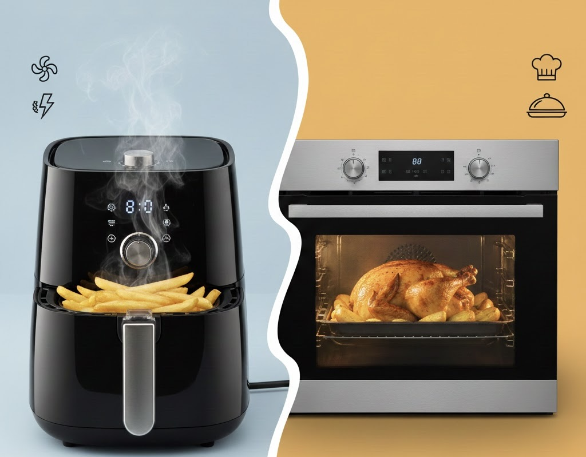

Die Heißluftfritteuse hat sich als kompakte, schnelle und energiesparende Alternative zum
Backofen etabliert, besonders für das Garen kleinerer Portionen. Durch die intensive und
schnelle Zirkulation der heißen Luft benötigt sie kaum Vorheizzeit und sorgt in kürzester Zeit
für eine extrem knusprige Oberfläche, ganz ohne viel Fett. Der Backofen hingegen punktet mit
seiner Kapazität und Vielseitigkeit, da er das gleichzeitige Garen großer Mengen ermöglicht und
sich ideal für Kuchen, Aufläufe und komplexere Gerichte eignet, die ein großes Volumen
erfordern. Obwohl die Fritteuse im Alltagseinsatz oft effizienter und schneller ist, bleibt der
Backofen unverzichtbar für das Backen und das Kochen für die ganze Familie.
